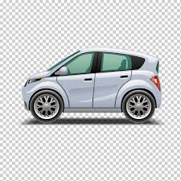
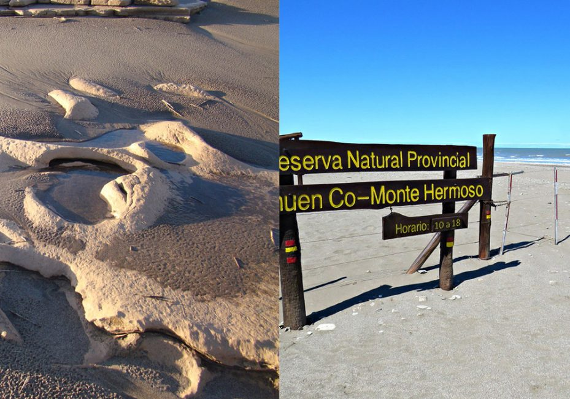
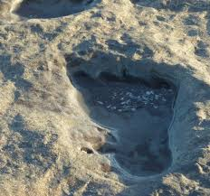
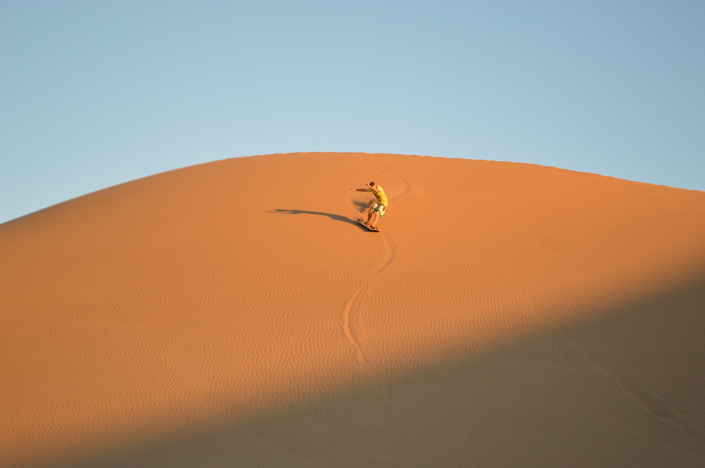
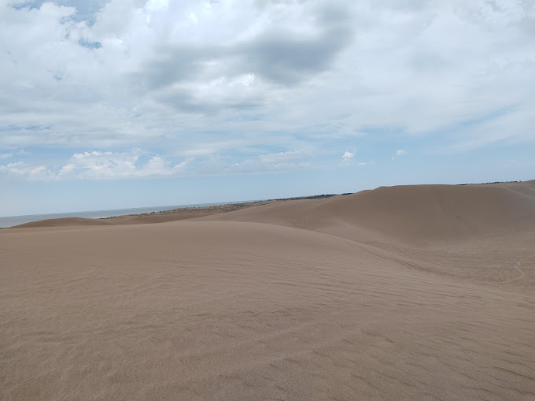
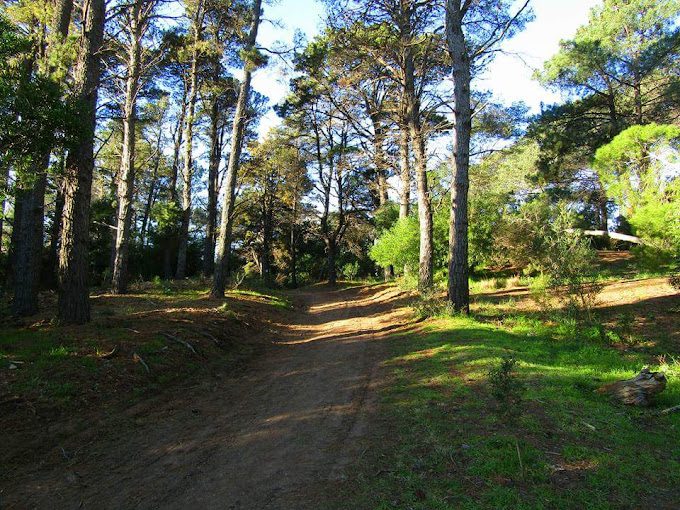
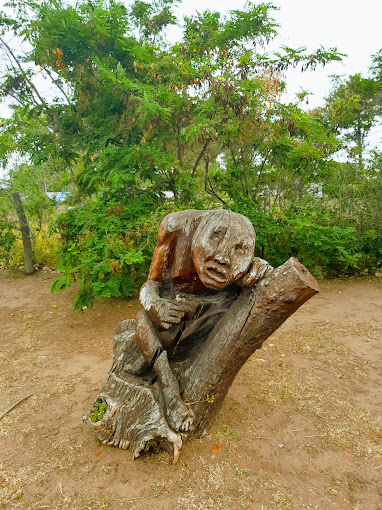

Inicio
Como Llegar
Automovil
Te contamos cómo llegar a Monte Hermoso con tu vehículo particular.
Podes hacerlo a traves de la Ruta Nacional Nº3. A la altura del kilómetro 605, Ruta Nacional Nº3, encontrarás el desvío que te lleva hasta la ciudad. Este desvío es la Ruta Provincial Nº 78, lleva directamente a Monte Hermoso.
Una vez que lleguen a la ciudad, pueden seguir las señales hacia el centro o hacia las playas para llegar a su destino.
Tren

Te contamos cómo llegar a Monte Hermoso si viajás en tren
La línea de tren más cercana se encuentra en la ciudad de Bahía Blanca. Para venir en tren deberás arribar en dicha ciudad y luego utilizar algún otro medio de transporte hacia Monte Hermoso como por ejemplo el servicio de combi u ómnibus.
Encontrá toda la información en el sitio web oficial de Trenes Argentinos.
- Estación Sud Bahía Blanca: Av. Cerri 750, Tel. 0291 – 4529196
- Empresa Ferrobaires: Buenos Aires – Bahía Blanca – Buenos Aires.
Para más información deberás comunicarte con las empresas correspondientes
Colectivo

Te contamos cómo llegar a Monte Hermoso a través de los diferentes servicios de ómnibus.
Existen varias empresas de transporte que llegan hasta nuestra ciudad. Todas ellas llegan a la Terminal de Ómnibus Monte Hermoso, ubicada en la Ruta Prov. N° 78 (Tel. 02921- 481993)
- Empresa Plusmar: Buenos Aires – Monte Hermoso
- Empresa Cóndor – La Estrella: La Plata – Monte Hermoso
- Empresa Andesmar: Mendoza, San Rafael y San Juan – Monte Hermoso
- Transporte Lucho: Coronel Dorrego – Monte Hermoso – (02921) -450045 / (0291) 42331036
- Empresa El Villarino: Bahía Blanca, Punta Alta – Monte Hermoso
Tené en cuenta que dependiendo de tu ciudad, deberás comunicarte con la empresa de transporte que llegue hasta nuestra ciudad.
Además, desde la terminal de ómnibus deberás trasladarte hasta tu alojamiento, pero no te preocupes, contamos con servicios de taxis en el lugar.
Combi

Te contamos cómo llegar a Monte Hermoso con los servicios de combis.
- Empresa Fetter Monte Hermoso – Bahía Blanca. Tel. (02921) 481611 / (0291) 4139946 – 5748480
- La Patagonia Monte Hermoso – Bahía Blanca. Tel. (0291) 4688750 – 4502211/ (02921) 481880
- Monte Bahía Bus Monte Hermoso – Bahía Blanca. Tel (0291) 5161650
Para más información, en cuanto a frecuencias y valores, comunicarse con las respectivas empresas.
Aéreo

Te contamos cómo llegar a Monte Hermoso si viajás en avión de línea.
Para llegar a nuestra ciudad en avión comercial, el aeropuerto más cercano se encuentra en Bahía Blanca. Para llegar hasta Monte Hermoso deberás arribar en Bahía Blanca y luego utilizar algún otro medio de transporte hacia tu destino final como por ejemplo el servicio de combi u ómnibus.
- Aeropuerto Comandante Espora B.Blanca: Tel. 0291 – 4860325 Aerolíneas Argentinas
- Destinos: (AEP) AEROPARQUE, (EZE) – EZEIZA, USHUAIA, MAR DEL PLATA, TRELEW, COMODORO RIVADAVIA
Para más información ingresá al sitio web del Aeropuerto de Bahía Blanca.
Galeria de Fotos
¿Que Hacer?
Playa Monte Hermoso
Hermosas playas dearenas finas y un declive muy suave, con una extension de 32km. Con la particularidad de poseer aguas libres de contaminación.
Por su ubicación geográfica (de este a oeste) es la única en el país donde el sol sale y se pone en el mar (esta característica le permite al visitante permanecer en ella durante más tiempo, sin conos de sombra)
El mejor atractivo de todos.
La temperatura de sus aguas, superior en 5º C a las de otras playas, también la diferencian de otros balnearios.
Su extensión, la calidez de sus aguas y la seguridad de su costa, hacen del lugar la mejor opción, donde la familia encontrará el destino apropiado para disfrutar de su tiempo vacacional.
Reservas Naturales y Medanos
Reserva Natural Provincial Pehuen-Co – Monte Hermoso
Se encuentra al oeste de la zona urbana sobre el sector playa, aproximadamente a 6 km. del centro.
En este lugar se pueden observar marcas e improntas de pisadas humanas que fueron impresas hace 7000 años de antigüedad en sedimentos limo-arcillosos. Según su naturaleza, este sitio es uno de los pocos en el mundo con dichas características y únicas en Sudamérica que dan testimonios de la vida en comunidad de los seres más antiguos que habitaron nuestra zona.
Consultas en: Museo de Ciencias «Vicente di Martino» – (02921) 482601 – Av. Faro Recalada 243 – Centro Cívico Alborada
 
Médanos Blancos
Ubicados en los sectores este y oeste de la ciudad. A medida que nos alejamos de la zona más densamente poblada, nos encontramos con una cadena medanosa de importante magnitud, de finas y claras arenas, ideales para la observación de aves y la práctica deportiva.
 
Paseo del Pinar
Ubicado en calle Bosque Alegre y Sipe Sipe. Es una reserva forestal de gran magnitud convertida en un espacio ideal para el descanso y la recreación.
Allí se encuentran frondosos y añejos árboles de variadas especies.
Se puede recorrer caminando o también en bicicleta. Es la opción ideal para un día en contacto con la naturaleza.
 